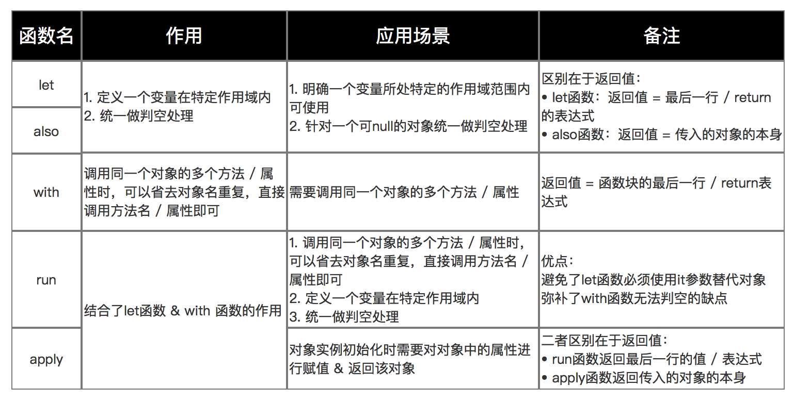

函数
函数声明
无返回值时，返回类型是 Unit，也可以省略。
简单的函数声明可以省略 {}，例如：
函数的最后一个参数如果也是函数，调用时可以将这个参数放到函数外面，例如：
匿名函数
匿名函数没有函数名，可以将其赋值给变量，变量的类型为 (参数类型, 参数类型) -> 返回值类型，调用的时候加上括号，例如：
// 声明匿名函数
val multi: (Double, Double) -> Double = { x, y ->
x + y
}
// 使用匿名函数
multi(2.0, 3.0)
val mm = multi
mm(2.0, 3.0)
高阶函数
高阶函数指的是函数的参数也是函数，例如：
fun advancedFunc(m: Int, mapper: (Int) -> String) : String{
return mapper(m)
}
advancedFunc(10, { num -> "$num"})
高阶函数的最后一个参数如果是匿名函数，在调用时可以把这个匿名函数放在圆括号外面，gradle 的 kotlin DSL 中有很多这种用法。例如上面的调用可以写成：
高阶函数会有一些运行时上的开销，因为函数是一个对象，在函数的实现中，会访问局部变量，因此在内存占用和虚拟调用都会有一定的开销。
Kotlin内置的常见高阶函数
let
let是一个作用域函数，在一个作用域内，对对象统一进行操作而不用重复判空。返回值由作用域内最后一行表达式或者return语句决定。
val american: American? = if (System.nanoTime() % 10 > 5) American() else null
val nation = american?.let {
it.sayHello()
it.showGift()
// 返回值
it.nation // 也可以写成 return it.nation
}
print(nation)
also
also的作用和let一样，区别是also返回的是传入作用域的对象。
// also
val chinese = Chinese()
val person = chinese.also {
it.sayHello()
// 返回person本身，而不是nation
it.nation
}
print(person.nation)
with
with的使用方法和let类似，返回值是最行一行表达式或者return语句。它有2个参数，第二个参数是匿名函数。使用时用with(obj){...}
在作用域内使用时可以省略对象名，直接调用对象的方法或属性。
val age = with(chinese) {
sayHello()
print("I come from $nation")
showGift()
val age = 20
// 返回age
age
}
println("with: age $age")
run
run相当于是let和with的结合体，返回值也是最后一行表达式或return语句，使用时直接用obj.run{...}，作用域内可以省略对象名，直接调用方法或属性
apply
apply相当于是also和with的结合体，返回值是对象本身。使用时直接用obj.run{...}，作用域内可以省略对象名，直接调用方法或属性
val person2 = chinese.apply {
sayHello()
showGift()
sayGoodbye()
// 返回chinese对象本身
}
println("apply: ${person2.javaClass}") // com.kotlin.classes.Chinese

内联函数
内联函数通过 inline 关键字修饰，会将调用函数的地方内联成函数的实现。内联函数会引入额外的代码，不过使用得当也能提升性能。
如果不希望传给函数的参数被内联，也可以用noinline参数修饰函数参数。noinline关键字不能修饰函数，可以修饰函数参数。
inline fun inlineParams(m: Int, mapper: (Int) -> String, noinline reducer: (Int) -> Int): String {
return mapper.invoke(reducer.invoke(m))
}
扩展函数
扩展函数指在不修改原类的基础上，对类添加新的函数。
扩展函数的原理是生成一个静态方法，第一个参数是被扩展类的实例。
扩展函数的特定：
- 不能被重写，因为它是静态的方法
- 成员函数优先级更高，如果类中有同名的函数，调用时会类的成员函数会覆盖扩展函数
- 不能访问私有属性和方法，因为只是对类进行包装，并不会改变可见性
参考：
[1] Carson.Ho.巧用Kotlin：内置函数let、also、with、run、apply大大提高你的开发效率！.掘金.2020-02-26